Introduction
Idiopathic pulmonary fibrosis (IPF) is progressive, with a heterogeneous and often unpredictable clinical course. Accurate risk stratification supports clinical monitoring, transplant referral, and clinical trial design, yet predicting individual outcomes remains challenging.1
The six-minute walk test (6MWT) is practical, standardized, and clinically interpretable. In addition to six-minute walk distance (6MWD), it captures oxygen requirement, exertional desaturation, and patient-reported dyspnea.2-4
Gas-exchange impairment, patient-perceived dyspnea, and exertional oxygen requirements may convey prognostic information not fully reflected by distance alone.5,6
The Oxygen-Distance-Dyspnea-Saturation (ODDS) score integrates key 6MWT components and improved prognostic performance over individual 6MWT parameters in a clinical trial population.7
We evaluated whether serial ODDS trajectory adds prognostic information beyond serial 6MWD for death or lung transplantation. Secondary analyses explored trial enrichment and ODDS as a candidate longitudinal clinical-trial endpoint.
Methods
Study design, data sources, and cohort construction
We performed a retrospective cohort study of adults with IPF who underwent 6MWTs as part of routine longitudinal care at the Inova Fairfax Hospital Advanced Lung Disease Program between 2011 and 2026. The analytic dataset included serial 6MWT records, clinical follow-up, vital status, lung transplantation status, respiratory hospitalization data, and antifibrotic prescription information. In this program, 6MWTs are generally obtained during protocolized longitudinal follow-up approximately every 3-6 months and are performed using a standardized protocol based on American Thoracic Society guidance. Pulse oximetry was assessed throughout the walk to capture exertional oxygen saturation, and Borg dyspnea scores were recorded using the Borg scale.2,3
The date of the first eligible 6MWT was defined as time zero. The baseline analytic cohort included patients with a valid baseline 6MWD, baseline ODDS score, and known death or transplantation status. Longitudinal analyses were restricted to patients in the baseline analytic cohort with at least two 6MWT assessments.
Component values outside prespecified physiologic ranges and chronologically impossible values were treated as missing. For comparative modeling, 6MWD was reverse-coded so that higher standardized values represented worse status, matching the direction of the ODDS raw score.
Baseline characteristics by endpoint status and characteristics of patients included in versus excluded from the analysis were summarized descriptively. Absolute standardized differences were used to describe the magnitude of between-group differences.
ODDS score calculation
The primary analyses used the continuous ODDS raw score.
For each 6MWT, the continuous ODDS raw score is calculated as:
ODDS raw = 0.180 x oxygen flow (L/min) - 0.004 x 6MWD (m) - 0.069 x nadir SpO2 (%) + 0.070 x Borg dyspnea score
More negative values indicate better status and less negative values indicate worse status. The score is often negative because the distance and nadir oxygen saturation terms are negative and numerically large. For example, a 6MWT performed on 2 L/min oxygen with 6MWD 200 m, nadir SpO2 92%, and Borg score 5 gives (0.180 x 2) - (0.004 x 200) - (0.069 x 92) + (0.070 x 5), or approximately -6.44. Longer walk distance and higher nadir SpO2 push the score downward, whereas higher oxygen requirement and greater Borg dyspnea push it upward. ODDS worsening over time is therefore represented by an increase in the raw score toward zero.
Outcomes and antifibrotic exposure
The primary endpoint was time to the first occurrence of death or lung transplantation. Patients without an event were censored at last available follow-up. Death alone (with transplantation treated as a censoring event) and time to respiratory hospitalization or death were evaluated as sensitivity endpoints.
Antifibrotic therapy was summarized descriptively but were not included in primary models because reliable ascertainment of medication start dates, stop dates, adherence, and treatment interruptions was challenging in this retrospective cohort.
Primary longitudinal dynamic prediction
The primary analysis evaluated whether serial ODDS provided better dynamic prognostic information than serial 6MWD. Serial ODDS and serial 6MWD were modeled separately using joint longitudinal-survival models. Each joint model included two linked parts: a longitudinal submodel describing how the marker changed over time within each patient and a survival submodel relating the patient's current estimated marker value to the risk of death or lung transplantation.
For the longitudinal submodel, the standardized marker was modeled with a Gaussian linear mixed-effects model containing linear time since the baseline 6MWT and correlated patient-specific random intercepts and slopes. The ODDS marker was standardized as (ODDS raw + 7.20477)/1.22839. For the comparison model, distance was reversed and standardized as (380.09623 - 6MWD in meters)/130.29415 so that higher values represented worsening in both models. The fitted current marker value was linked to a relative-risk survival submodel for death or lung transplantation. No additional clinical covariates were included. The log baseline hazard was represented by penalized quadratic B-splines with nine segments and a second-order difference penalty.
Joint models were fit in JMbayes2 using four Markov chains of 20,000 iterations, including 5,000 burn-in iterations per chain, without thinning; 60,000 posterior draws were retained. The current-value association had a normal prior with mean 0 and standard deviation 2. Random-effect correlations used an LKJ prior with eta=3, and the baseline-hazard smoothing precision used a gamma prior with shape 5 and rate 0.5. Additional model details and assessments are provided in Appendix 2. Sampling was considered satisfactory when clinically important parameters and derived baseline survival had rank-normalized split R-hat <=1.01 and effective sample size >=300, supported by trace-plot review. Model fit was evaluated using posterior predictive checks of the longitudinal distribution, mean trajectory, variance, within-patient correlation, and event process.
Dynamic predictions were evaluated at 0.5, 1.0, 1.5, and 2.0 years after baseline for subsequent 1-, 2-, and 3-year horizons. Discrimination was summarized using inverse-probability-of-censoring-weighted (IPCW) time-dependent AUC, and IPCW Brier score summarized overall prediction error. Calibration was evaluated after pooling predictions from all held-out patients. Censoring-aware calibration measures included calibration-in-the-large, calibration slope, integrated calibration index (ICI), and E50 and E90 (representing the median and 90th percentile absolute differences between predicted and observed risk along a flexible calibration curve).
Primary dynamic performance was internally validated using patient-level five-fold cross-validation, with all observations from an individual retained in the same fold. Marker standardization and model fitting were repeated in each training fold before predictions were evaluated in the held-out patients. Fold-specific AUC and Brier estimates were combined using the number of test patients at risk. Calibration curves and summary measures were estimated from pooled out-of-fold predictions, with patient-level bootstrap intervals.
Start-stop time-updated Cox models were performed in the full baseline cohort as a sensitivity analysis of the primary longitudinal modeling approach. To assess potential guarantee-time bias introduced by requiring at least two retained tests for the joint-model cohort, fixed landmark Cox sensitivity analyses were also constructed from the full baseline cohort at 0.5, 1.0, 1.5, and 2.0 years. At each landmark, patients were required only to be alive and event-free and under observation at that time; the most recent marker measured on or before the landmark was used, no future 6MWT was required, and endpoint follow-up began at the landmark. Landmark dynamic AUC and Brier scores were estimated using IPCW and internally validated using bootstrap optimism correction.
Secondary baseline validation, calibration, and recalibration
Baseline prognostic performance was evaluated as a secondary analysis using the first eligible 6MWT. ODDS raw score and 6MWD were compared in separate Cox proportional hazards models fit in the same baseline analytic cohort. Because 6MWD is one of the variables used to calculate ODDS- ODDS and 6MWD were not included together in the primary baseline comparison model. This approach facilitated the intended comparison between a multidomain 6MWT score and distance alone.
Effects were reported per 1-standard-deviation worsening of each marker: higher/worse ODDS and lower/worse 6MWD. Discrimination was summarized using Harrell C-index and IPCW time-dependent AUC at 1, 2, and 3 years. The C-index provides an overall measure of risk ranking across follow-up, whereas time-dependent AUC evaluates discrimination at specific prediction horizons. Prediction error was summarized using IPCW Brier scores at the same horizons. Calibration was assessed using calibration-in-the-large, calibration slope, observed versus predicted risk by predicted-risk strata, and calibration belt testing.
The previously published ODDS specification was retained as the primary baseline validation model. Local recalibration was evaluated with baseline-hazard and intercept updating and flexible spline updating. Because recalibration did not meaningfully improve model fit, calibration, or prediction error these recalibrated models were not subsequently used. Bootstrap resampling with 200 replicates was used for selected optimism-corrected performance estimates.
Individual 6MWT component analysis
To evaluate whether non-distance 6MWT information contributed prognostic value, we compared models using individual walk-test measures: 6MWD, oxygen requirement, nadir SpO2, exertional desaturation, and Borg dyspnea score. We also fit a model containing the individual ODDS inputs together: 6MWD, oxygen requirement, nadir SpO2, and Borg dyspnea score. This model was compared with the 6MWD-alone model using a likelihood-ratio test to determine whether the broader walk-test profile improved model fit beyond distance alone.
Sensitivity analyses
Sensitivity analyses evaluated the robustness of baseline and longitudinal findings across alternative cohorts, endpoints, and modeling strategies. These included analyses restricted to a contemporary era, patients with repeated 6MWTs, patients who received antifibrotic therapy, death-alone analyses with censoring at transplantation, time to respiratory hospitalization or death, multiple-imputation analyses for missing baseline predictors, start-stop time-updated Cox models, and bootstrap-corrected landmark Cox dynamic prediction.
Exploratory trial-enrichment analyses
Exploratory hypothetical trial-enrichment analyses compared ODDS-only and 6MWD-only selection strategies. Enrichment rules were summarized by retained cohort fraction, Kaplan-Meier estimated 1-year death or transplantation risk, approximate sample-size implications under a hypothetical 25% relative risk reduction, and physiologic representativeness. Retention-matched enrichment analyses compared patients with worse ODDS values, defined using the median, top tertile, and top quartile, with the corresponding lowest 6MWD strata.
Exploratory candidate longitudinal thresholds
Candidate ODDS change thresholds were explored as potential longitudinal markers of disease worsening. First, ODDS changes at approximately 6 and 12 months were compared according to whether patients experienced a decline in 6MWD of at least 30 m or 45 m from baseline. These thresholds approximate historically cited minimally important 6MWD decline thresholds in IPF and allowed frequently cited clinical 6MWD worsening anchors to be translated into candidate ODDS worsening thresholds.8,9
Second, outcome-anchored ODDS change thresholds were estimated using Youden's index. This approach identified the ODDS change threshold that best balanced sensitivity and specificity for predicting death or lung transplantation during the subsequent 2 years. Patients were classified according to whether they exceeded the selected ODDS worsening threshold, and event-free survival was displayed using Kaplan-Meier curves with pointwise confidence intervals and risk tables.
Because thresholds and performance were estimated in the same cohort, these ODDS change thresholds should be considered exploratory functional and prognostic thresholds rather than definitive minimally important differences or validated trial endpoints.
Software
Analyses were performed using R version 4.5.2. JMbayes2 version 0.6.0 was used for joint longitudinal-survival modeling.
Results
Cohort assembly and observed outcomes
Seven hundred sixty-eight patient records were identified during the study period. After 13 duplicate records were consolidated, 755 unique patients were screened. A total of 139 patients were excluded before baseline analysis: 103 were missing baseline 6MWT components, 34 were missing follow-up, and 2 had undergone lung transplantation before the initial consultation. The baseline cohort therefore included 616 patients (Figure 1). Mean (SD) follow-up was 2.3 (2.4) years, and median (IQR) follow-up was 1.4 (0.5-3.2) years. During follow-up, 280 patients experienced death or lung transplantation; the first event was death in 179 patients and lung transplantation in 101. Post-baseline respiratory hospitalization occurred in 272 patients, with 820 total respiratory hospitalizations identified.
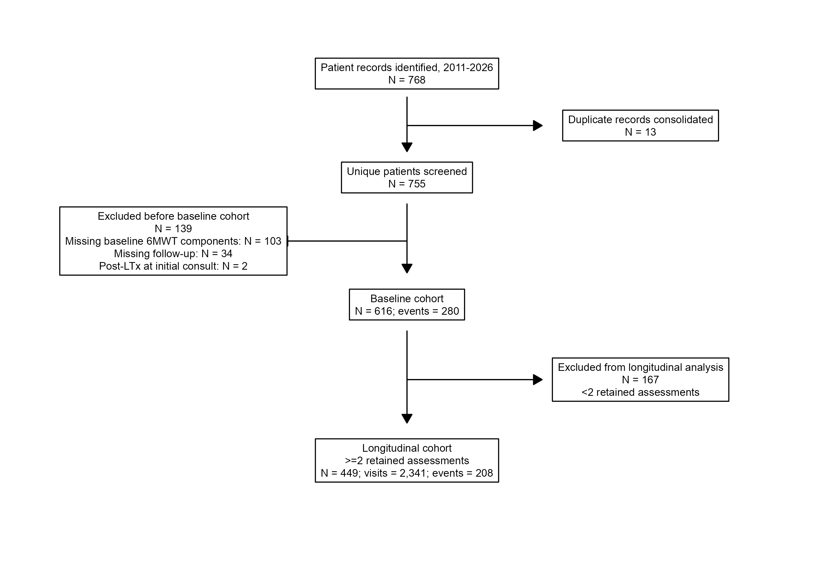
Baseline characteristics
At baseline, median age was 70 years, 74% were male, and 75% were White/Caucasian. Median FVC was 65% predicted and median DLCO was 44% predicted. Baseline antifibrotic therapy at the time of initial consultation was uncommon (N=44, 7.1%), whereas antifibrotic were prescribed during follow up in 468 patients (76%). Patients who died or underwent lung transplantation had lower FVC and DLCO, more frequent oxygen use at rest, lower nadir oxygen saturation, greater exertional desaturation, and worse 6MWD and ODDS raw scores. Absolute standardized differences were largest for DLCO, FVC, nadir SpO2, exertional desaturation, and ODDS raw score (0.40-0.68; Table 1 and Figure 2).
Table 1. Baseline characteristics by outcome
| Characteristic | Overall N = 616 |
No death/transplant N = 336 |
Death/transplant N = 280 |
Absolute standardized difference |
|---|---|---|---|---|
| Age, years | 70 (64, 75) | 71 (66, 76) | 69 (63, 74) | 0.30 |
| Sex | 0.32 | |||
|
155 (25%) | 105 (31%) | 50 (18%) | |
|
457 (74%) | 229 (68%) | 228 (81%) | |
|
4 (0.6%) | 2 (0.6%) | 2 (0.7%) | |
| Race/ethnicity | 0.06 | |||
|
464 (75%) | 254 (76%) | 210 (75%) | |
|
42 (6.8%) | 21 (6.3%) | 21 (7.5%) | |
|
42 (6.8%) | 24 (7.1%) | 18 (6.4%) | |
|
37 (6.0%) | 21 (6.3%) | 16 (5.7%) | |
|
31 (5.0%) | 16 (4.8%) | 15 (5.4%) | |
| Body mass index, kg/m² | 27.9 (24.8, 31.7) | 28.0 (24.8, 31.9) | 27.9 (24.7, 31.5) | 0.02 |
| FVC, % predicted | 65 (52, 80) | 70 (57, 84) | 61 (49, 74) | 0.54 |
|
24 | 13 | 11 | |
| DLCO, % predicted | 44 (33, 54) | 49 (39, 60) | 38 (29, 48) | 0.68 |
|
206 | 118 | 88 | |
| Oxygen use at rest | 143 (24%) | 63 (20%) | 80 (29%) | 0.22 |
|
17 | 14 | 3 | |
| Baseline oxygen flow at rest, L/min (among oxygen users) | 4 (2, 6) | 4 (1, 6) | 4 (2, 6) | 0.08 |
| Baseline 6MWD, m | 355 (253, 444) | 360 (284, 443) | 339 (228, 444) | 0.21 |
| Resting SpO2, % | 99 (98, 100) | 99 (98, 100) | 99 (97, 100) | 0.16 |
|
5 | 2 | 3 | |
| Nadir SpO2, % | 91 (87, 95) | 93 (89, 96) | 89 (86, 94) | 0.51 |
| Desaturation, percentage points | 7 (3, 11) | 6 (3, 10) | 9 (6, 12) | 0.50 |
|
5 | 2 | 3 | |
| Borg dyspnea score | 3.0 (2.0, 4.0) | 3.0 (1.5, 4.0) | 3.0 (2.0, 4.5) | 0.17 |
| ODDS raw score | -7.45 (-8.04, -6.44) | -7.65 (-8.20, -6.87) | -7.12 (-7.83, -6.13) | 0.40 |
| Antifibrotic baseline | 44 (7.1%) | 29 (8.6%) | 15 (5.4%) | 0.13 |
| Antifibrotic ever | 468 (76%) | 277 (82%) | 191 (68%) | 0.33 |
Values are median (IQR) or n (%). Absolute standardized differences were calculated among nonmissing observations using pooled-variance standardization for continuous and binary variables and a generalized standardized difference for multicategory variables. Values closer to 0 indicate greater similarity; 0.10 is commonly used as a marker of a potentially meaningful difference.
Oxygen flow is summarized only among baseline oxygen users (n = 143; missing = 0).
6MWD = six-minute walk distance; DLCO = diffusing capacity; FVC = forced vital capacity; ODDS = Oxygen-Distance-Dyspnea-Saturation; SpO2 = peripheral oxygen saturation.
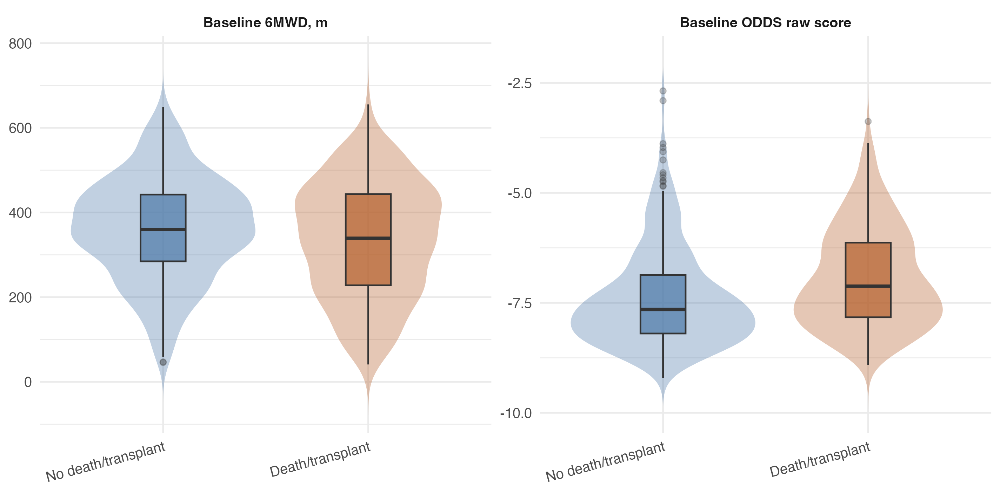
Figure 2. Baseline ODDS and 6MWD distributions by outcome. Violin and box displays compare baseline 6MWD (left) and baseline ODDS raw score (right) among patients who did not versus did subsequently experience death or lung transplantation. Violin width reflects the concentration of observations and the embedded box plots show the median and interquartile range.
Representativeness of the longitudinal cohort
Among the 616 patients in the baseline cohort, 449 had at least two retained assessments and entered the longitudinal cohort; 167 were excluded. Excluded patients generally had worse baseline physiologic status and substantially shorter observation (Table 2). In the longitudinal cohort, mean (SD) follow-up was 2.7 (2.5) years and median (IQR) follow-up was 2.0 (0.9-3.6) years and the corresponding values among excluded patients were 1.1 (1.9) years and 0.4 (0.1-1.1) years.
Table 2. Characteristics and observed outcomes of patients included in versus excluded from the longitudinal cohort
| Characteristic | Included in longitudinal cohort N = 449 |
Excluded from longitudinal cohort N = 167 |
Absolute standardized difference |
|---|---|---|---|
| Demographics | |||
| Age, years | 70 [64, 75] | 70 [65, 76] | 0.04 |
| Sex | 0.17 | ||
|
107 (23.8%) | 48 (28.7%) | |
|
338 (75.3%) | 119 (71.3%) | |
|
4 (0.9%) | 0 (0.0%) | |
|
0 (0.0%) | 0 (0.0%) | |
| Race/ethnicity | 0.14 | ||
|
338 (75.3%) | 126 (75.4%) | |
|
29 (6.5%) | 13 (7.8%) | |
|
31 (6.9%) | 11 (6.6%) | |
|
30 (6.7%) | 7 (4.2%) | |
|
18 (4.0%) | 9 (5.4%) | |
|
3 (0.7%) | 1 (0.6%) | |
| BMI, kg/m2 | 28.1 [25.0, 31.7] | 27.3 [23.9, 31.5] | 0.04 |
| Baseline physiologic status | |||
| FVC, % predicted | 67.0 [54.0, 81.0] | 61.5 [48.0, 74.2] | 0.29 |
| DLCO, % predicted | 44.0 [34.0, 55.0] | 44.0 [28.0, 52.2] | 0.19 |
| Oxygen use at rest | 83 (18.5%) | 60 (35.9%) | 0.43 |
| Baseline 6MWD, m | 382 [288, 454] | 302 [204, 374] | 0.62 |
| Baseline ODDS raw score | -7.58 [-8.11, -6.75] | -7.04 [-7.67, -5.86] | 0.53 |
| Observed follow-up and outcomes | |||
| Available follow-up, years | 2.0 [0.9, 3.6] | 0.4 [0.1, 1.1] | 0.72 |
| Any death recorded during available follow-up | 155 (34.5%) | 64 (38.3%) | |
| Lung transplantation after cohort entry | 88 (19.6%) | 13 (7.8%) | |
| Death or lung transplantation (first event) | 208 (46.3%) | 72 (43.1%) |
Values are median [IQR] or n (%). Absolute standardized differences were calculated among nonmissing observations for baseline characteristics and follow-up duration; values closer to 0 indicate greater similarity, and 0.10 is commonly used as a marker of a potentially meaningful difference.
6MWD = six-minute walk distance; DLCO = diffusing capacity; FVC = forced vital capacity; ODDS = Oxygen-Distance-Dyspnea-Saturation.
Secondary baseline ODDS validation
Both baseline 6MWD and ODDS raw score were strongly associated with death or lung transplantation. Each 1-SD lower baseline 6MWD was associated with higher event risk (HR, 1.71; 95% CI, 1.50-1.95; P<0.001). However, each 1-SD higher/worse ODDS raw score was associated with an even larger increase in risk (HR, 2.10; 95% CI, 1.88-2.35; P<0.001).
ODDS was associated with higher discrimination than 6MWD alone. The apparent Harrell C-index was 0.745 for ODDS compared with 0.658 for 6MWD. After bootstrap optimism correction, the C-index was 0.743 for ODDS and 0.657 for 6MWD, with an optimism-corrected difference of 0.086. Censoring-aware time-dependent AUCs favored ODDS at 1, 2, and 3 years: 0.816, 0.809, and 0.789 for ODDS versus 0.714, 0.703, and 0.675 for 6MWD (Figure 3). IPCW Brier scores were also lower for ODDS at each horizon: 0.123, 0.169, and 0.191 versus 0.136, 0.193, and 0.220 for 6MWD.
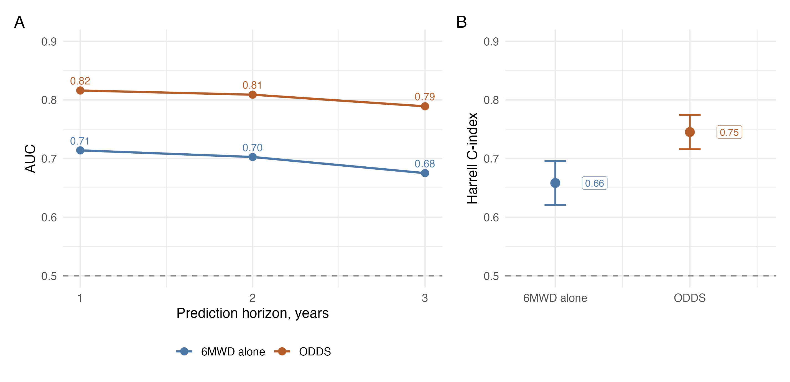
Figure 3. Baseline discrimination for ODDS versus 6MWD alone. ODDS demonstrated higher (A) censoring-aware horizon-specific area under the curve at 1, 2, and 3 years and (B) overall Harrell C-index compared with 6MWD alone.
Baseline model calibration
The published ODDS score showed good cohort-level calibration. The mean predicted 1-year risk from the published ODDS survival estimate was 17.6%, closely approximating the observed 1-year death/transplant risk of 18.9%.7 Risk-stratified calibration plots showed broadly acceptable agreement between predicted and observed risk (Figure 4). Although predicted and observed risks were not perfectly aligned at every evaluated time point, calibration was generally acceptable and recalibration efforts did not substantially improve overall model performance. Therefore, the original ODDS score was retained for subsequent validation analysis.
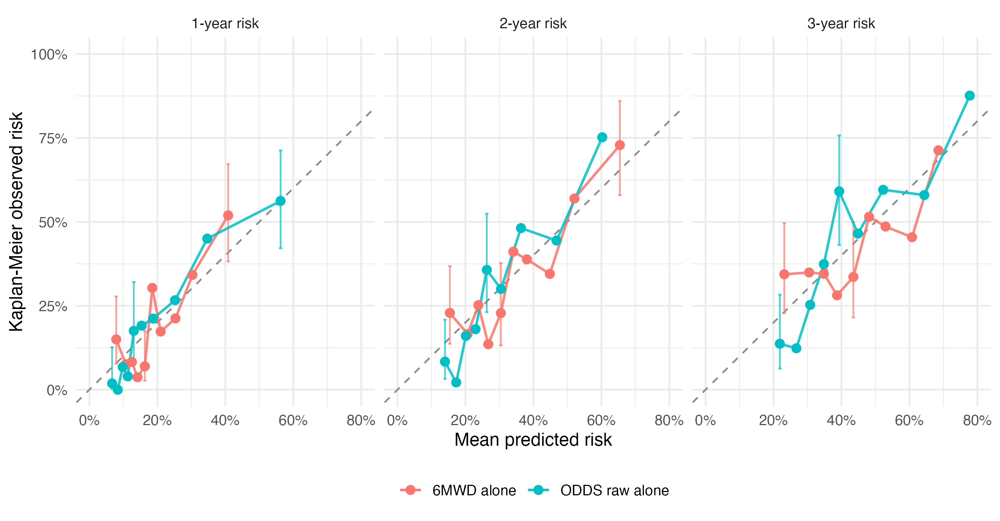
Figure 4. Calibration by model risk decile at 1, 2, and 3 years. Points show decile-level mean predicted risk versus Kaplan-Meier observed death or transplant risk for 6MWD alone and ODDS raw score alone. The dashed line indicates perfect calibration; vertical lines show selected 95% confidence intervals for observed risk.
Component-level analyses
Analyses of the individual 6MWT measures supported the value of using the full walk-test profile rather than distance alone. When evaluated one at a time, prognostic discrimination was modest for 6MWD alone (C-index 0.658), oxygen requirement (0.694), nadir SpO₂ (0.714), exertional desaturation (0.688), and Borg dyspnea (0.637). However, the full component model had a C-index of 0.753 and significantly improved fit compared with the model containing 6MWD alone (likelihood-ratio chi-square=77.9; P<0.001). In this full model, 6MWD, oxygen requirement, and nadir SpO2 remained independently associated with death or lung transplantation, whereas Borg dyspnea did not (p>0.05).
Primary longitudinal analyses
The longitudinal cohort included 449 patients with at least two retained 6MWT assessments and evaluated a total of 2,341 6MWTs. In this cohort, 208 patients experienced death or lung transplantation with death as the first event in 120 patients and lung transplantation as the first event in 88. The median number of 6MWTs was 5 [IQR, 3-7] across a median observation span of 1.28 years [IQR, 0.56-2.43]. Median baseline-to-last 6MWD change was -19.8 m, whereas median baseline-to-last ODDS change was +0.42, both consistent with overall worsening (Figure 5).
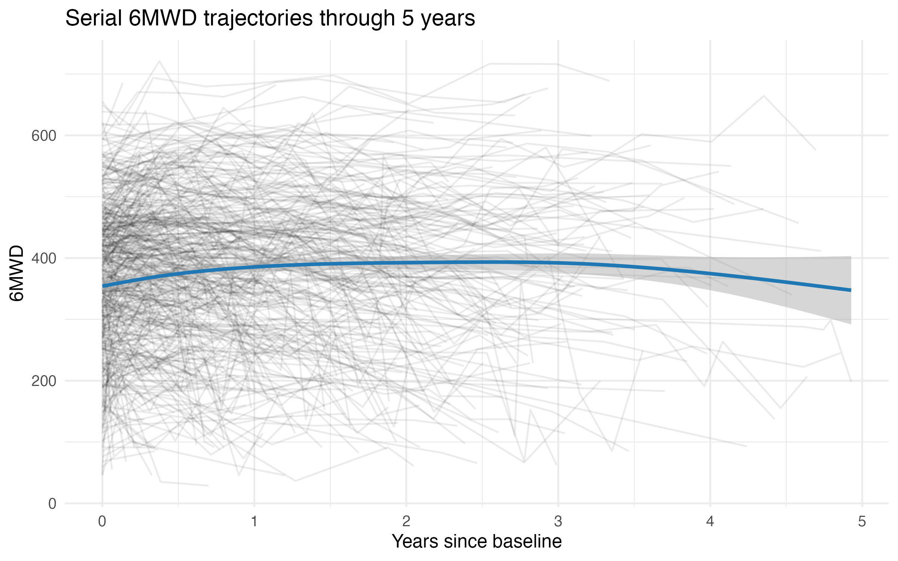
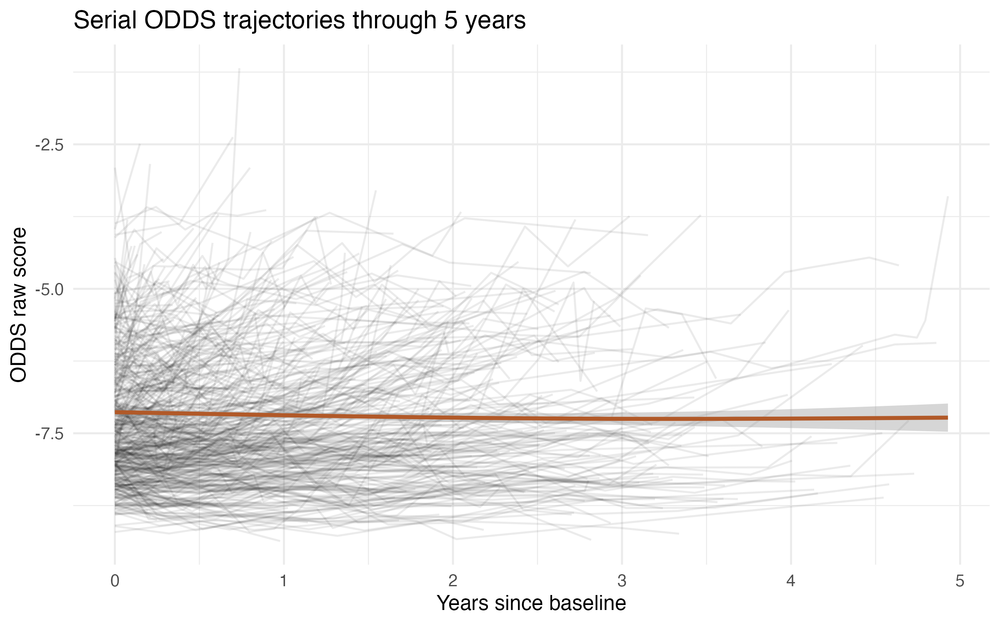
Figure 5. 6MWD and ODDS score trajectories across follow-up. Spaghetti plots show patient-level 6MWD and ODDS raw-score trajectories through 5 years after the first 6MWT. The overlaid smooth curve summarizes the average trajectory with its confidence band.
A 1-SD worse current modeled ODDS value was associated with a 2.28-fold higher instantaneous rate of death or transplantation (95% credible interval, 1.91-2.72), compared with a 1.82-fold higher rate for a 1-SD worse current modeled 6MWD value (1.49-2.20).
Four-chain sampling was satisfactory for both models. Maximum R-hat values were 1.003 for ODDS and 1.005 for 6MWD, and the lowest effective sample sizes across key parameters and derived survival quantities were 1,079 and 587, respectively, both exceeding the prespecified threshold of 300. Posterior predictive checks showed no gross failure of either longitudinal or event submodel. Detailed prior distributions, sampling and convergence diagnostics, posterior predictive checks, cross-validation methods, and model-sensitivity analyses are provided in the separate ODDS joint-model summary.
The serial ODDS discrimination advantage persisted after patient-level five-fold internal validation (Figure 6). Across prediction start times and horizons, cross-validated AUC ranged from 0.76 to 0.83 for ODDS and from 0.61 to 0.72 for 6MWD. Among 328 patients at risk at the 1-year prediction start, ODDS AUCs for the subsequent 1, 2, and 3 years were 0.784, 0.774, and 0.761, respectively, compared with 0.707, 0.676, and 0.651 for 6MWD. Across all evaluated windows, IPCW Brier scores were lower for ODDS (0.113-0.214) than for 6MWD (0.116-0.244; Figure 7). Pooled out-of-fold ICI ranged from 0.025 to 0.075 for ODDS and from 0.014 to 0.061 for 6MWD; corresponding E50 ranges were 0.015-0.052 and 0.006-0.062, and E90 ranges were 0.043-0.145 and 0.033-0.126. Neither model showed a consistent direction of mean overprediction or underprediction. At the 1-year prediction start, ODDS ICI values were 0.025, 0.042, and 0.029 for the subsequent 1-, 2-, and 3-year horizons, and all three calibration-slope intervals included 1. Calibration slopes were below 1 for longer-horizon ODDS evaluations, indicating that these longer-term predictions warrant greater caution.
To illustrate how serial ODDS measurements update patient-level prognosis, representative displays were generated for patients with worsening and improving ODDS trajectories (Figure 8) and for two patients with similar 6MWD profiles but divergent ODDS trajectories (Figure 9).
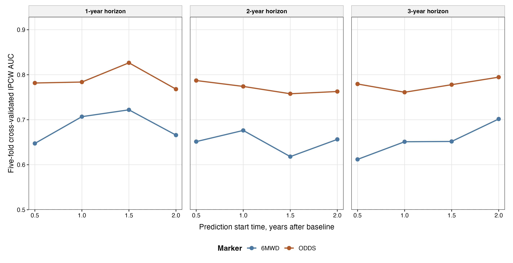
Figure 6. Patient-level cross-validated discrimination from the joint longitudinal-survival models. Points and lines show weighted mean IPCW time-dependent AUC across five held-out patient folds using serial marker history available at prediction start times of 0.5, 1.0, 1.5, and 2.0 years. Panels show subsequent 1-, 2-, and 3-year prediction horizons.
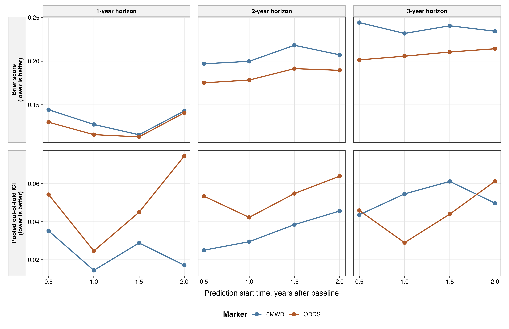
Figure 7. Patient-level cross-validated prediction error and calibration from the joint longitudinal-survival models. The upper row shows weighted mean IPCW Brier score across five held-out patient folds. The lower row shows ICI estimated after pooling out-of-fold predictions and fitting censoring-aware calibration curves. Lower values indicate less overall prediction error or calibration discrepancy.
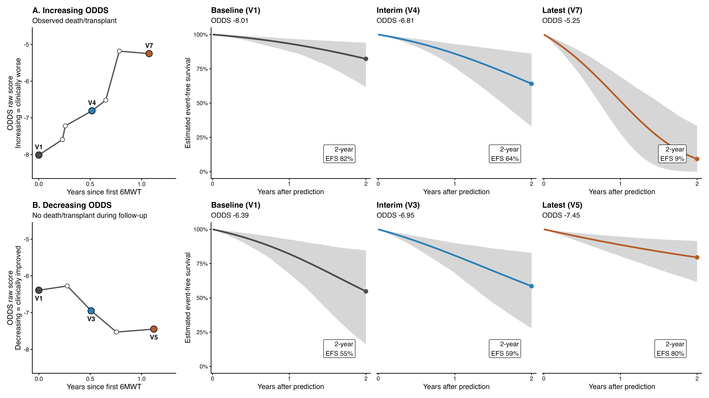
Figure 8. Patient-level dynamic ODDS survival displays. Two representative patients illustrate opposing serial ODDS trajectories. For each patient, the left panel shows observed ODDS raw scores, and the three right-hand panels show event-free survival estimated by the joint model after baseline, interim, and latest ODDS observations. Shaded regions are pointwise 95% intervals. Labels give estimated 2-year event-free survival after incorporating information through each highlighted visit.
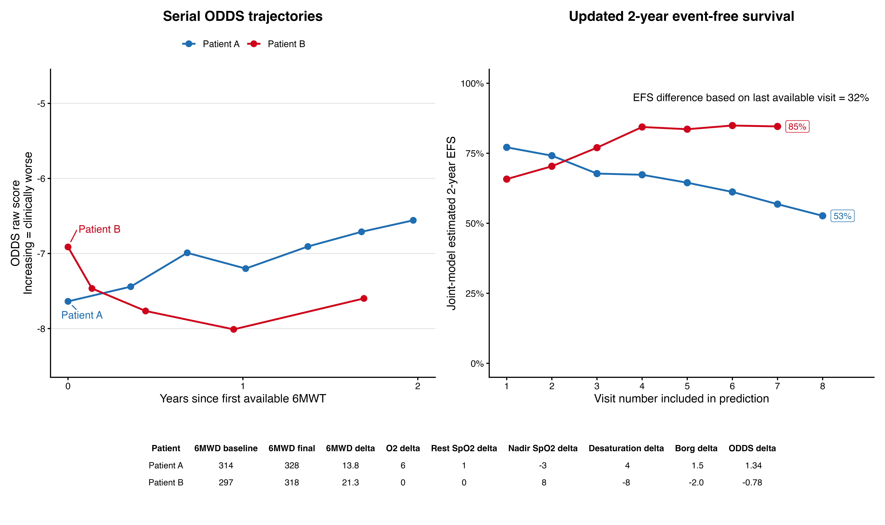
Figure 9. 6MWD-matched patient dynamic survival comparison. Two patients with similar baseline and final 6MWD were selected to illustrate how divergent ODDS trajectories can change prognosis. The left panel shows serial ODDS and the right panel shows 2-year event-free survival estimated by the joint model after each available 6MWT was incorporated. The table below the figure shows how individual ODDS components contributed to the divergent trajectories.
Sensitivity analyses
Results were consistent across major sensitivity analyses. For the ODDS joint model, tighter and more diffuse current-value association priors, a simpler baseline hazard, and independent random effects produced nearly identical association estimates and dynamic performance. The hazard ratio per 1-SD worse current ODDS value ranged from 2.27 to 2.29 across these supported alternatives, and apparent AUC at the 1-year prediction start for the subsequent 2 years ranged from 0.788 to 0.791. A more complex model that added an instantaneous ODDS-slope association did not meet the sampling criteria and was therefore not further developed.
In time-updated Cox models using the full baseline cohort, both worse serial 6MWD and worse serial ODDS were associated with subsequent death or lung transplantation, with hazard ratios of 2.27 and 2.43, respectively. Fixed landmark analyses also used the full baseline cohort, began outcome follow-up at each landmark, and required no future 6MWT. Across 1-, 2-, and 3-year horizons, bootstrap-corrected landmark AUCs ranged from 0.76 to 0.80 for ODDS and 0.62 to 0.72 for 6MWD (Figure 10), providing directionally consistent results without the primary joint model's two-test inclusion requirement.
In the baseline sensitivity restricted to 468 patients with antifibrotic exposure, ODDS retained higher discrimination than 6MWD (C-index 0.755 vs. 0.675). Within the 449-patient longitudinal cohort, the antifibrotic-exposed subgroup included 355 patients and 150 events and the time-updated hazard ratio per 1-SD worsening was 2.42 for ODDS and 2.09 for 6MWD. Findings were also robust in contemporary-era, multiple-imputation, death-alone, respiratory hospitalization/death, repeated-measure, and clinically relevant baseline 6MWD-stratum analyses (Tables 3 and 4).
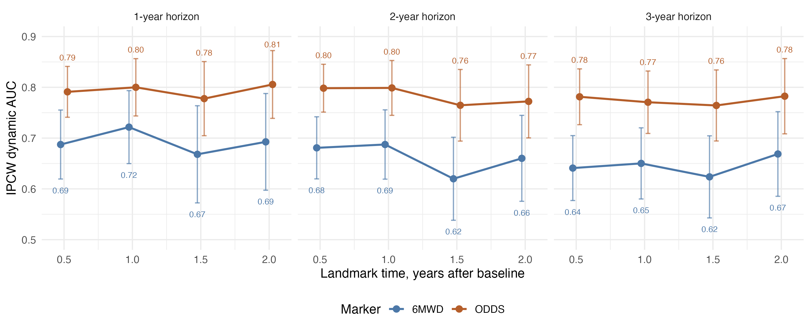
Figure 10. Landmark Cox sensitivity analysis for serial ODDS versus serial 6MWD. Landmark models were fit at 0.5, 1.0, 1.5, and 2.0 years for 1-, 2-, and 3-year horizons. Labels show inverse-probability-of-censoring-weighted dynamic AUC estimates; vertical bars show pointwise 95% confidence intervals.
Table 3. Baseline cohort sensitivity analyses
| Analysis | 6MWD | ODDS | Details |
|---|---|---|---|
| Contemporary cohort (n=275, events=72) | C-index 0.660 | C-index 0.746 | Initial visit on or after January 1, 2020 |
| Antifibrotic exposure (n=468, events=191) | C-index 0.675; HR 1.82 (1.55-2.15) | C-index 0.755; HR 2.14 (1.87-2.45) | Restricted to patients treated with an antifibrotic during the study period |
| Repeated measures (n=449, events=208) | C-index 0.589 | C-index 0.707 | Restricted to patients with repeated 6MWD and ODDS (longitudinal clinical follow up) |
| Multiple-imputation baseline sensitivity | C-index 0.658; HR 1.71 (1.50-1.95) | C-index 0.745; HR 2.10 (1.88-2.35) | Baseline predictor missingness addressed through imputation |
| Baseline 6MWD stratum >450 m (n=139, events=62) | C-index 0.525 | C-index 0.758 | Restricted to patients with preserved walk distance |
| Baseline 6MWD stratum 150-450 m (n=428, events=186) | C-index 0.634 | C-index 0.722 | Restricted walk distance |
Baseline sensitivity analyses compare ODDS raw score alone with 6MWD alone across alternative cohorts and missing-data approaches. Higher C-index values indicate better discrimination.
Table 4. Longitudinal and alternate-endpoint sensitivity analyses
| Analysis | 6MWD result | ODDS result | Comment |
|---|---|---|---|
| Time-updated Cox, full baseline cohort (N=616; 280 events) | HR 2.27 (1.99-2.58) | HR 2.43 (2.16-2.74) | Current marker value at each visit |
| Landmark Cox dynamic prediction | Corrected AUC 0.62-0.72 | Corrected AUC 0.76-0.80 | Full baseline cohort at fixed landmarks; no future test required; IPCW; 100 bootstrap resamples |
| Antifibrotic-exposed longitudinal subgroup (N=355; 150 events) | HR 2.09 (1.76-2.48) | HR 2.42 (2.08-2.83) | Restricted to longitudinal cohort |
| Death alone; transplant censored (N=616; 179 deaths) | C-index 0.733 | C-index 0.758 | Transplantation treated as censoring |
| Respiratory hospitalization or death (N=612; 343 events) | C-index 0.671 | C-index 0.731 | Alternate composite endpoint |
Hazard ratios are reported per 1-SD worsening. IPCW = inverse probability of censoring weighting.
Exploratory enrichment and candidate endpoint analyses
Baseline 6MWT-based trial enrichment
Hypothetical ODDS-based clinical trial enrichment strategies were favored compared with retention-matched 6MWD strategies (Tables 5 and 6; Figure 11). Selecting patients with worse-than-median ODDS retained 50.0% of the cohort and yielded a 1-year death/transplant risk of 32.4%, compared with 30.4% when retaining the lowest half by 6MWD. ODDS top-tertile enrichment yielded a 40.0% risk compared with 34.5% for the lowest 6MWD tertile, and ODDS top-quartile enrichment yielded a 45.2% risk compared with 38.4% for the lowest 6MWD quartile. Under a hypothetical 25% relative risk reduction, estimated sample size per arm was 293 for the ODDS top quartile and 380 for the lowest 6MWD quartile.
Table 5. Clinical trial enrichment hypothetical exploratory analysis
| Strategy | Threshold used | Retained, N | Retained, % | 1-year endpoint rate (95% CI) | N per arm | Approx total screened | Median baseline 6MWD | Median baseline ODDS |
|---|---|---|---|---|---|---|---|---|
| All eligible patients | - | 616 | 100.0% | 18.9% (95% CI 15.8%-22.5%) | 972 | 1944 | 355 | -7.45 |
| 6MWD 150-450 m trial-style band | - | 428 | 69.5% | 17.1% (95% CI 13.6%-21.4%) | 1091 | 3141 | 334 | -7.3 |
| ODDS above median | ODDS raw >= -7.45 | 308 | 50.0% | 32.4% (95% CI 27.0%-38.5%) | 486 | 1944 | 258 | -6.44 |
| 6MWD lowest half (median cut) | 6MWD <= 355 m | 308 | 50.0% | 30.4% (95% CI 25.1%-36.6%) | 529 | 2116 | 253 | -6.53 |
| ODDS top tertile | ODDS raw >= -6.91 | 206 | 33.4% | 40.0% (95% CI 33.0%-47.9%) | 356 | 2130 | 219 | -5.99 |
| 6MWD lowest tertile | 6MWD <= 302 m | 206 | 33.4% | 34.5% (95% CI 27.9%-42.3%) | 443 | 2650 | 213 | -6.2 |
| ODDS top quartile | ODDS raw >= -6.44 | 154 | 25.0% | 45.2% (95% CI 36.8%-54.6%) | 293 | 2344 | 211 | -5.64 |
| 6MWD lowest quartile | 6MWD <= 253 m | 154 | 25.0% | 38.4% (95% CI 30.4%-47.6%) | 380 | 3040 | 192 | -5.93 |
Sample-size estimates assume a 1-year binary death/transplant endpoint, two-arm 1:1 allocation, two-sided alpha 0.05, 80% power, and 25% relative risk reduction.
Table 6. Retention-matched ODDS versus 6MWD enrichment comparisons (hypothetical)
| Selection fraction | ODDS rule | 6MWD rule | ODDS retained, N (%) | 6MWD retained, N (%) | ODDS 1-year endpoint rate | 6MWD 1-year endpoint rate | 1-year endpoint rate difference, percentage points | ODDS N per arm | 6MWD N per arm | N per arm difference |
|---|---|---|---|---|---|---|---|---|---|---|
| Median cut / highest-risk half | ODDS above median | 6MWD lowest half (median cut) | 308 (50.0%) | 308 (50.0%) | 32.4% (95% CI 27.0%-38.5%) | 30.4% (95% CI 25.1%-36.6%) | 1.9 | 486 | 529 | -43 |
| Tertile cut / highest-risk third | ODDS top tertile | 6MWD lowest tertile | 206 (33.4%) | 206 (33.4%) | 40.0% (95% CI 33.0%-47.9%) | 34.5% (95% CI 27.9%-42.3%) | 5.5 | 356 | 443 | -87 |
| Quartile cut / highest-risk quarter | ODDS top quartile | 6MWD lowest quartile | 154 (25.0%) | 154 (25.0%) | 45.2% (95% CI 36.8%-54.6%) | 38.4% (95% CI 30.4%-47.6%) | 6.8 | 293 | 380 | -87 |
ODDS strata are compared with 6MWD strata that retain the same approximate fraction of patients.
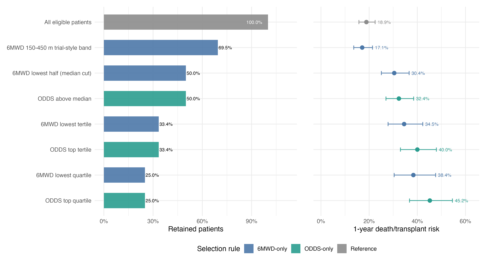
Figure 11. Clinical trial enrichment tradeoff. The left panel compares retained cohort fraction and the right panel compares Kaplan-Meier estimated 1-year death/transplant risk for ODDS-only and 6MWD-only selection rules. Median, tertile, and quartile rows provide retention-matched comparisons.
Longitudinal ODDS change as a candidate endpoint
At approximately 6 and 12 months, candidate ODDS thresholds anchored to 30 m and 45 m 6MWD decline ranged from 0.06 to 0.28, with AUCs from 0.76 to 0.86 (Figure 12). In the complementary outcome-anchored analysis, the ODDS worsening thresholds had moderate sensitivity and good specificity for subsequent 2-year death or transplantation: 63.2% sensitivity and 79.7% specificity for a 6-month increase of at least 0.25, and 60.8% sensitivity and 85.0% specificity for a 12-month increase of at least 0.41 (hazard ratios 2.95 and 4.50, respectively; Figure 13).
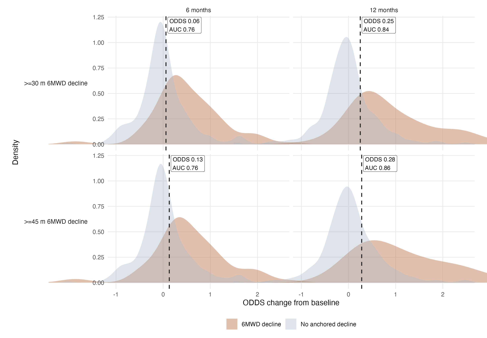
Figure 12. ODDS change distributions by 6MWD decline threshold. Density plots show ODDS raw-score change at approximately 6 and 12 months, stratified by whether patients experienced at least 30 m or 45 m decline in 6MWD. Dashed lines show Youden-selected candidate ODDS thresholds, and labels report AUC.
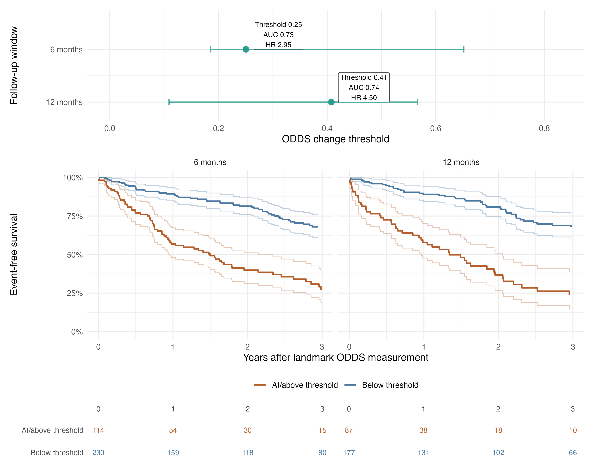
Figure 13. Outcome-anchored ODDS change thresholds and subsequent event-free survival. The upper panel shows Youden-selected ODDS worsening thresholds and percentile bootstrap intervals for subsequent 2-year death or transplantation. Lower panels show Kaplan-Meier event-free survival after the 6- or 12-month assessment, with pointwise confidence intervals and numbers at risk. Thresholds are exploratory prognostic cut points, not validated minimal important differences or trial endpoints.
Discussion
Principal findings
Serial ODDS provided more accurate dynamic prognostic information than serial 6MWD alone and more clearly identified patients at higher risk of death or lung transplantation.
Repeated multidomain 6MWT information refined prognosis over time, supporting the premise that oxygen requirement, distance, desaturation, and dyspnea together capture clinically meaningful risk beyond distance alone.
Relation to prior ODDS research
ODDS was developed using standardized 6MWTs from the ISABELA trials to predict short-term respiratory hospitalization or death. The present study extends that work with longer follow-up, a death or lung transplantation endpoint, censoring-aware performance assessment through 3 years, and longitudinal dynamic prediction.7
Because the prior real-world validation cohort came from the same IPF program, the baseline findings should be viewed as confirmatory expanded temporal validation rather than wholly independent external validation. The longitudinal analysis is the principal new contribution.
Clinical interpretation of the multidomain 6MWT
6MWD remains practical, familiar, and reproducible when testing is standardized. Both low baseline 6MWD and subsequent decline are associated with mortality in IPF.2,9,10
Distance captures only one aspect of the 6MWT. Patients with similar distances may differ in oxygen requirement, exertional desaturation, and perceived dyspnea, and a stable distance can mask physiologic deterioration when more oxygen or greater symptoms are required. ODDS can capture this discordance (Figure 9).
A model containing 6MWD, oxygen requirement, nadir SpO2, and Borg dyspnea improved fit over 6MWD alone. Distance, oxygen requirement, and nadir SpO2 remained independently associated with death or transplantation.
Although Borg dyspnea was not independently significant, it captures patient-perceived symptom burden that may relate to health status and quality of life and aligns with regulatory emphasis on how patients feel and function.11-13
ODDS is therefore best viewed as a practical summary of disease burden captured during a routine 6MWT, rather than as a measure of how much each component independently contributes to risk.
Performance across the functional spectrum
Among patients walking more than 450 m, distance alone provided limited discrimination whereas ODDS continued to separate risk. ODDS also outperformed 6MWD within the 150-450 m range commonly used in clinical trials.14-16
These findings are consistent with floor and ceiling limitations of distance alone and suggest that a multidomain score may characterize risk across a broader functional spectrum.
Longitudinal dynamic prediction
Both serial ODDS and serial 6MWD were strongly associated with subsequent death or transplantation, but ODDS provided better dynamic discrimination across the evaluated horizons, including in held-out patients during five-fold internal validation.
Joint longitudinal and time-to-event modeling estimates each patient's underlying trajectory, accounts for measurement error and irregularly timed tests, and reduces bias when longitudinal follow-up ends because of death or transplantation.17
This framework updates prognosis as each new 6MWT becomes available, allowing ODDS to function as an evolving physiologic phenotype rather than relying on the most recent distance measurement alone.
The ODDS association and predictive performance were stable across reasonable prior and model-structure alternatives. Pooled out-of-fold calibration showed no consistent mean overprediction or underprediction. Absolute-risk estimates still require prospective external validation and calibration assessment.
Clinical-trial implications
The 6- and 12-month ODDS change cutoffs were selected for the best combined sensitivity and specificity for subsequent 2-year death or transplantation and should be considered exploratory proposed prognostic thresholds.
Prognostic responsiveness does not establish treatment responsiveness, a minimal important difference, or surrogacy for clinical benefit. Prospective studies must establish test-retest reliability, sensitivity to effective therapy, and anchor-based thresholds before ODDS could serve as a primary or regulatory endpoint.
Limitations
This was a retrospective, single-center cohort in which 6MWTs were obtained during routine care.
The timing and availability of repeat 6MWTs may have depended on clinical deterioration, transplant evaluation, follow-up intensity, or the patient's ability to complete testing. Joint longitudinal-survival modeling helps address measurement error and outcome-related truncation of repeated measurements but it does not explicitly model this potentially informative testing process. If testing depended on unmeasured health status after accounting for observed marker history, trajectory and prediction estimates could remain biased.
Requiring at least two retained 6MWTs for the primary joint-model cohort meant that patients had to survive and remain testable until a repeat assessment, creating potential survivor or guarantee-time selection. Fixed landmark sensitivity analyses began outcome follow-up at each landmark, included eligible members of the full baseline cohort, and required no future test. Their directionally consistent findings therefore reduces this concern. Nevertheless, these analyses condition on being alive and under observation at the landmark and cannot fully remove selection related to continued follow-up, so the primary longitudinal estimates may remain optimistic.
There was partial overlap with the previously published baseline validation cohort. This limits the independence of the secondary baseline analysis.
Antifibrotic start, stop, interruption, and adherence dates could not be reliably reconstructed. Although serial ODDS remained prognostic among patients who had ever received antifibrotic therapy, future model evaluation and updates in patients on current and future IPF treatments is critical.
Lung transplantation is influenced not only by disease severity but also by referral, candidacy, organ availability, and center-level practices.
Serial observations became sparse later in follow-up, and posterior predictive uncertainty widened accordingly. Model estimates based on long-term follow-up and over long-term prediction horizons should be interpreted cautiously.
Conclusion
Serial ODDS provided stronger dynamic prognostic performance than serial 6MWD alone for death or lung transplantation and supports interpreting the 6MWT as a multidomain assessment of function, gas exchange, and symptoms.
Prospective evaluation is needed to establish external validity, reliability, and responsiveness to effective treatment.
References
1. Ley B, Collard HR, King TE, Jr. Clinical course and prediction of survival in idiopathic pulmonary fibrosis. Am J Respir Crit Care Med. Feb 15 2011;183(4):431-40. doi:10.1164/rccm.201006-0894CI
2. ATS statement: guidelines for the six-minute walk test. Am J Respir Crit Care Med. Jul 1 2002;166(1):111-7. doi:10.1164/ajrccm.166.1.at1102
3. Lancaster L, Fieuw A, Meulemans J, Ford P, Nathan SD. Standardization of the 6-min walk test in clinical trials of idiopathic pulmonary fibrosis. Contemporary Clinical Trials. 2021/01/01/ 2021;100:106227. doi:https://doi.org/10.1016/j.cct.2020.106227
4. Holland AE, Spruit MA, Troosters T, et al. An official European Respiratory Society/American Thoracic Society technical standard: field walking tests in chronic respiratory disease. European Respiratory Journal. 2014;44(6):1428-1446. doi:10.1183/09031936.00150314
5. Lama VN, Flaherty KR, Toews GB, et al. Prognostic value of desaturation during a 6-minute walk test in idiopathic interstitial pneumonia. Am J Respir Crit Care Med. Nov 1 2003;168(9):1084-90. doi:10.1164/rccm.200302-219OC
6. Nishiyama O, Taniguchi H, Kondoh Y, et al. A simple assessment of dyspnoea as a prognostic indicator in idiopathic pulmonary fibrosis. Eur Respir J. Nov 2010;36(5):1067-72. doi:10.1183/09031936.00152609
7. Nathan SD, Gao J, Kim HC, et al. Development and validation of a predictive 6-min walk score in patients with idiopathic pulmonary fibrosis. Eur Respir J. Nov 2025;66(5)doi:10.1183/13993003.02565-2024
8. Swigris JJ, Wamboldt FS, Behr J, et al. The 6 minute walk in idiopathic pulmonary fibrosis: longitudinal changes and minimum important difference. Thorax. Feb 2010;65(2):173-7. doi:10.1136/thx.2009.113498
9. du Bois RM, Weycker D, Albera C, et al. Six-minute-walk test in idiopathic pulmonary fibrosis: test validation and minimal clinically important difference. Am J Respir Crit Care Med. May 1 2011;183(9):1231-7. doi:10.1164/rccm.201007-1179OC
10. du Bois RM, Albera C, Bradford WZ, et al. 6-Minute walk distance is an independent predictor of mortality in patients with idiopathic pulmonary fibrosis. Eur Respir J. May 2014;43(5):1421-9. doi:10.1183/09031936.00131813
11. Dyspnea. Mechanisms, assessment, and management: a consensus statement. American Thoracic Society. Am J Respir Crit Care Med. Jan 1999;159(1):321-40. doi:10.1164/ajrccm.159.1.ats898
12. Manali ED, Stathopoulos GT, Kollintza A, et al. The Medical Research Council chronic dyspnea score predicts the survival of patients with idiopathic pulmonary fibrosis. Respir Med. Apr 2008;102(4):586-92. doi:10.1016/j.rmed.2007.11.008
13. Food US, Drug A. Patient-Focused Drug Development: Selecting, Developing, or Modifying Fit-for-Purpose Clinical Outcome Assessments. Guidance for Industry, Food and Drug Administration Staff, and Other Stakeholders. 2025. 2025/10//. Accessed 2026/06/26. https://www.fda.gov/media/159500/download
14. King TE, Jr., Bradford WZ, Castro-Bernardini S, et al. A phase 3 trial of pirfenidone in patients with idiopathic pulmonary fibrosis. N Engl J Med. May 29 2014;370(22):2083-92. doi:10.1056/NEJMoa1402582
15. Maher TM, Ford P, Brown KK, et al. Ziritaxestat, a Novel Autotaxin Inhibitor, and Lung Function in Idiopathic Pulmonary Fibrosis: The ISABELA 1 and 2 Randomized Clinical Trials. Jama. May 9 2023;329(18):1567-1578. doi:10.1001/jama.2023.5355
16. Waxman A, Restrepo-Jaramillo R, Thenappan T, et al. Inhaled Treprostinil in Pulmonary Hypertension Due to Interstitial Lung Disease. N Engl J Med. Jan 28 2021;384(4):325-334. doi:10.1056/NEJMoa2008470
17. Kurland BF, Johnson LL, Egleston BL, Diehr PH. Longitudinal Data with Follow-up Truncated by Death: Match the Analysis Method to Research Aims. Stat Sci. 2009;24(2):211. doi:10.1214/09-sts293
Appendix 1. Baseline ODDS survival model information
The baseline survival model was intended to estimate death or transplantation risk from the continuous ODDS score. The following specifications support external validation and independent model refitting.
Table 7. Baseline Cox model specification
| Element | Specification |
|---|---|
| Analytic cohort | Baseline analytic cohort, n = 616; death/transplant events, n = 280 |
| Outcome | Time from baseline 6MWT assessment to death or lung transplantation. Patients were censored at last follow-up |
| Model form | Cox proportional hazards model: Surv(follow_time_years, primary_event) ~ z_odds_raw |
| Predictor | z_odds_raw = (ODDS raw score - analytic-cohort mean ODDS raw score) / SD |
| ODDS score mean | -7.1724 |
| ODDS score SD | 1.1544 |
| Coefficient | beta for z_odds_raw = 0.7420 |
| Hazard ratio | HR per 1-SD higher ODDS raw score = 2.10 (95% CI, 1.88-2.35; P < 0.001) |
| Equivalent score effect | beta per 1-unit higher ODDS raw score = 0.6428; HR per 1-unit higher ODDS score = 1.90 |
| Covariates | None |
| Software implementation | R survival::coxph was used with default Efron handling of tied event times |
Baseline hazard values
The table reports baseline cumulative hazard H0(t), baseline survival S0(t) = exp[-H0(t)], and risk for a patient at z_odds_raw = 0, corresponding to the baseline analytic-cohort mean ODDS raw score (-7.1724).
Table 8. Baseline hazard values
| Horizon | H0(t) | S0(t) | Risk at z = 0 |
|---|---|---|---|
| 1 year | 0.1795 | 0.8356 | 16.4% |
| 2 years | 0.3908 | 0.6765 | 32.3% |
| 3 years | 0.6404 | 0.5271 | 47.3% |
Exact Cox-model absolute risks require the full baseline cumulative-hazard step function or fitted model object, which is available from the study team upon reasonable request.
Appendix 2. Joint longitudinal-survival model information
Detailed prior distributions, sampling and convergence diagnostics, posterior predictive checks, cross-validation methods, and model-sensitivity analyses are provided in the separate ODDS joint-model summary. Saved fitted model objects are available from the study team upon reasonable request.
Table 9. Joint longitudinal-survival model specification
| Model element | Final specification or result |
|---|---|
| Analysis sample | 449 patients with 208 first death or lung transplantation events. |
| Marker orientation and scaling | ODDS z = (ODDS raw + 7.20477)/1.22839. Worse-oriented 6MWD z = (380.09623 - 6MWD in meters)/130.29415. Training-fold center and scale values were re-estimated within each cross-validation fold. |
| Longitudinal submodel | Gaussian linear mixed-effects model with linear time since the first retained 6MWT, a patient-specific random intercept, and a patient-specific random slope with estimated correlation. |
| Event submodel and baseline hazard | Relative-risk model for time to first death or lung transplantation, linked to the current fitted value of the standardized marker. No additional clinical covariates were included. The baseline hazard used penalized quadratic B-splines with nine segments and a second-order difference penalty. |
| Bayesian estimation and model checks | Four chains of 20,000 iterations, including 5,000 burn-in iterations per chain, yielded 60,000 retained draws. Prespecified convergence and effective-sample-size criteria were met for clinically important parameters and derived baseline survival. Posterior predictive checks showed no gross model failure. |
| Current-value association | ODDS hazard ratio 2.28 per 1-SD worsening (95% credible interval, 1.91-2.72). 6MWD hazard ratio 1.82 per 1-SD worsening (1.49-2.20). |
| Internal validation | Patient-level five-fold cross-validation kept all visits from each patient in one fold, repeated marker scaling and model fitting in each training sample, and evaluated IPCW AUC and Brier score in held-out patients. Censoring-aware calibration curves, ICI, E50, E90, calibration-in-the-large, and calibration slope were estimated from pooled out-of-fold predictions. |
| Software | R 4.5.2; JMbayes2 0.6.0; GLMMadaptive 0.9-7; nlme 3.1-168; survival 3.8-3; posterior 1.7.0; coda 0.19-4.1. |